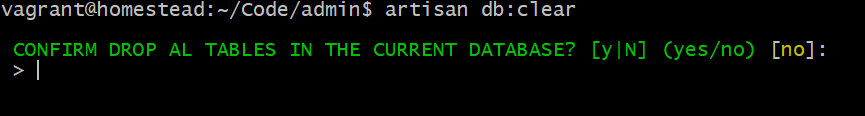
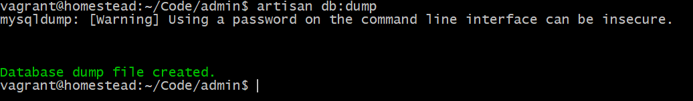
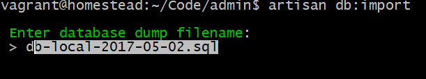
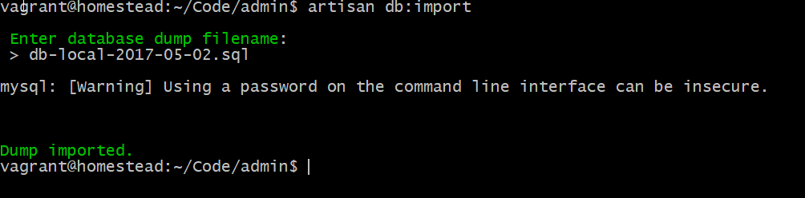

This command deletes all tables in the current database.
artisan db:dump

This command will automatically create a SQL dump file in the current projects folder.
This file is named: db-[environment name]-[today's date].sql
artisan db:import

This command imports a database from a .sql file. This command has auto complete
so you can press the first letter or two and then arrow through all possibilities.
